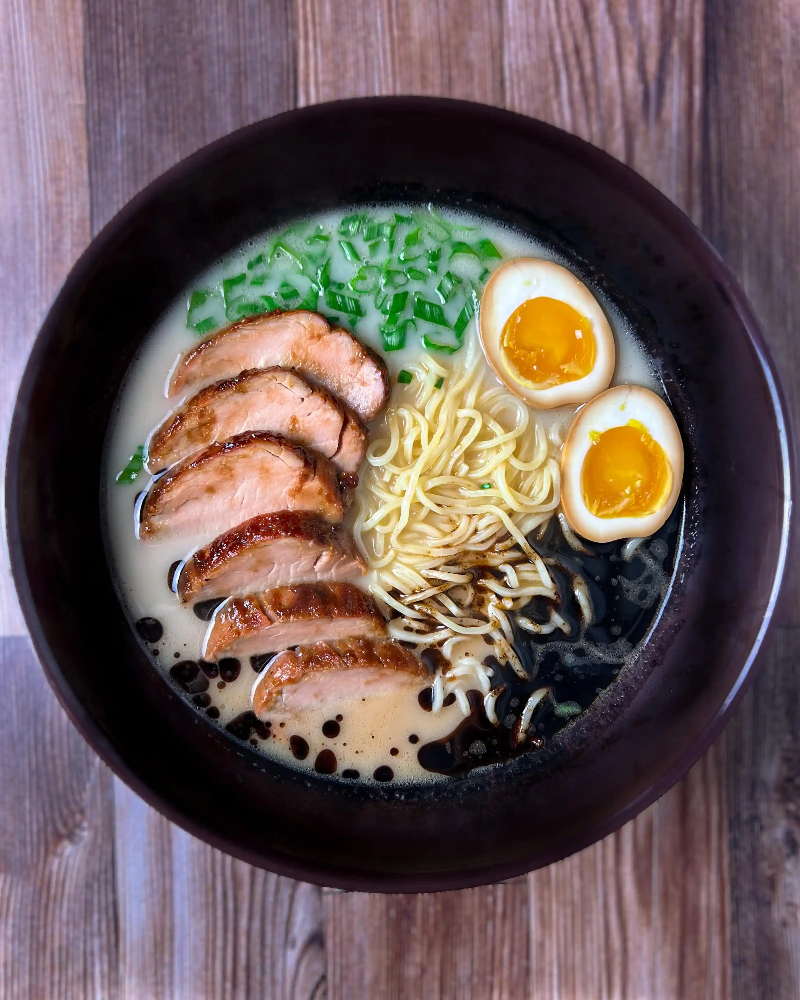
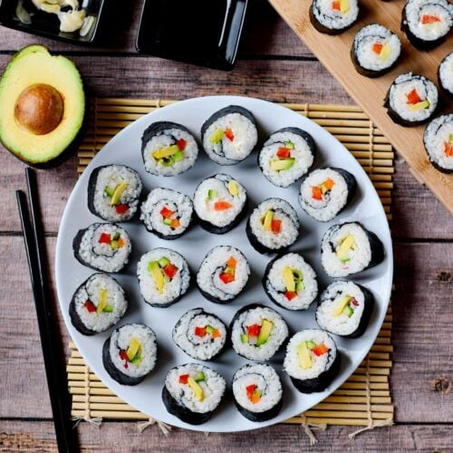

Serving Size:Serves 4
Prep Time:
30 min
Cook Time:
12 hrs
Total Time:
12.5 hrs
Ingredients:
For the broth:
• 2 lbs pork bones
• 2 onions, halved
• 6 garlic cloves
• 2-inch ginger, sliced
• 2 sheets kombu
• 2 tbsp sesame oil
For serving:
• Fresh ramen noodles
• Chashu pork
• Soft-boiled eggs (ajitsuke tamago)
• Green onions
• Nori sheets
• Bamboo shoots
• Black garlic oil (mayu)
`,
`
Instructions:
1. Blanch pork bones for 10 minutes.
2. Roast bones and vegetables until browned.
3. Simmer bones and aromatics for 12 hours.
4. Strain and season broth.
5. Cook fresh ramen noodles.
6. Prepare toppings.
7. Assemble: noodles, hot broth, toppings.
8. Finish with garlic oil and green onions.`)">
Tonkotsu Ramen
Serving Size:Makes 2 rolls (12-16 pieces)
Prep Time:
30 min
Cook Time:
20 min
Total Time:
50 min
Ingredients:
• 2 cups sushi rice
• 2.5 cups water
• 1/4 cup rice vinegar
• 1 tbsp sugar
• 1/2 tsp salt
• 2 nori sheets
• Sushi-grade fish (salmon/tuna)
• Cucumber
• Avocado
• Wasabi
• Pickled ginger
• Soy sauce for serving
`,
`
Instructions:
1. Rinse rice until water runs clear.
2. Cook rice in rice cooker or pot.
3. Mix vinegar, sugar, salt; fold into rice.
4. Place nori on bamboo mat.
5. Spread rice on nori, leaving top edge.
6. Add fillings in center.
7. Roll tightly using bamboo mat.
8. Cut with wet knife into 6-8 pieces.`)">
Sushi Roll